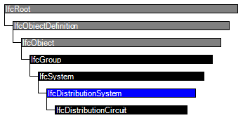

| haustechnische Anlage |
 | Distribution System |
 | Système de distribution |
| Item | SPF | XML | Change | Description | 4.0.0.0 |
|---|---|---|---|---|
| IfcDistributionSystem | ADDED |
A distribution system is a network designed to receive, store, maintain, distribute, or control the flow of a distribution media. A common example is a heating hot water system that consists of a pump, a tank, and an interconnected piping system for distributing hot water to terminals.
The group IfcDistributionSystem defines the occurrence of a specialized system for use within the context of building services.
Important functionalities for the description of a distribution system are derived from existing IFC entities:
HISTORY New entity in IFC4.
IFC4 CHANGE For electrical power systems, IfcElectricalCircuit has been used for low-voltage (12-1000 V) power circuits and has been replaced by IfcDistributionCircuit in IFC4; IfcDistributionSystem with PredefinedType 'ELECTRICAL' should be used for overall power systems, and IfcDistributionCircuit with PredefinedType 'ELECTRICAL' should be used for each switched circuit.
| # | Attribute | Type | Cardinality | Description | R |
|---|---|---|---|---|---|
| 6 | LongName | IfcLabel | ? |
Long name for a distribution system, used for informal purposes. It should be used, if available, in conjunction with the inherited Name attribute.
NOTE In many scenarios the Name attribute refers to the short name or number of a distribution system or branch circuit, and the LongName refers to a descriptive name. | X |
| 7 | PredefinedType | IfcDistributionSystemEnum | ? | Predefined types of distribution systems. | X |

| # | Attribute | Type | Cardinality | Description | R |
|---|---|---|---|---|---|
| IfcRoot | |||||
| 1 | GlobalId | IfcGloballyUniqueId | Assignment of a globally unique identifier within the entire software world. | X | |
| 2 | OwnerHistory | IfcOwnerHistory | ? |
Assignment of the information about the current ownership of that object, including owning actor, application, local identification and information captured about the recent changes of the object,
NOTE only the last modification in stored - either as addition, deletion or modification. IFC4 CHANGE The attribute has been changed to be OPTIONAL. | X |
| 3 | Name | IfcLabel | ? | Optional name for use by the participating software systems or users. For some subtypes of IfcRoot the insertion of the Name attribute may be required. This would be enforced by a where rule. | X |
| 4 | Description | IfcText | ? | Optional description, provided for exchanging informative comments. | X |
| IfcObjectDefinition | |||||
| HasAssignments | IfcRelAssigns @RelatedObjects | S[0:?] | Reference to the relationship objects, that assign (by an association relationship) other subtypes of IfcObject to this object instance. Examples are the association to products, processes, controls, resources or groups. | X | |
| Nests | IfcRelNests @RelatedObjects | S[0:1] | References to the decomposition relationship being a nesting. It determines that this object definition is a part within an ordered whole/part decomposition relationship. An object occurrence or type can only be part of a single decomposition (to allow hierarchical strutures only).
IFC4 CHANGE The inverse attribute datatype has been added and separated from Decomposes defined at IfcObjectDefinition. | ||
| IsNestedBy | IfcRelNests @RelatingObject | S[0:?] | References to the decomposition relationship being a nesting. It determines that this object definition is the whole within an ordered whole/part decomposition relationship. An object or object type can be nested by several other objects (occurrences or types).
IFC4 CHANGE The inverse attribute datatype has been added and separated from IsDecomposedBy defined at IfcObjectDefinition. | X | |
| HasContext | IfcRelDeclares @RelatedDefinitions | S[0:1] | References to the context providing context information such as project unit or representation context. It should only be asserted for the uppermost non-spatial object.
IFC4 CHANGE The inverse attribute datatype has been added. | ||
| IsDecomposedBy | IfcRelAggregates @RelatingObject | S[0:?] | References to the decomposition relationship being an aggregation. It determines that this object definition is whole within an unordered whole/part decomposition relationship. An object definitions can be aggregated by several other objects (occurrences or parts).
IFC4 CHANGE The inverse attribute datatype has been changed from the supertype IfcRelDecomposes to subtype IfcRelAggregates. | X | |
| Decomposes | IfcRelAggregates @RelatedObjects | S[0:1] | References to the decomposition relationship being an aggregation. It determines that this object definition is a part within an unordered whole/part decomposition relationship. An object definitions can only be part of a single decomposition (to allow hierarchical strutures only).
IFC4 CHANGE The inverse attribute datatype has been changed from the supertype IfcRelDecomposes to subtype IfcRelAggregates. | X | |
| HasAssociations | IfcRelAssociates @RelatedObjects | S[0:?] | Reference to the relationship objects, that associates external references or other resource definitions to the object.. Examples are the association to library, documentation or classification. | X | |
| IfcObject | |||||
| 5 | ObjectType | IfcLabel | ? |
The type denotes a particular type that indicates the object further. The use has to be established at the level of instantiable subtypes. In particular it holds the user defined type, if the enumeration of the attribute PredefinedType is set to USERDEFINED.
| X |
| IsTypedBy | IfcRelDefinesByType @RelatedObjects | S[0:1] | Set of relationships to the object type that provides the type definitions for this object occurrence. The then associated IfcTypeObject, or its subtypes, contains the specific information (or type, or style), that is common to all instances of IfcObject, or its subtypes, referring to the same type.
IFC4 CHANGE New inverse relationship, the link to IfcRelDefinesByType had previously be included in the inverse relationship IfcRelDefines. Change made with upward compatibility for file based exchange. | X | |
| IsDefinedBy | IfcRelDefinesByProperties @RelatedObjects | S[0:?] | Set of relationships to property set definitions attached to this object. Those statically or dynamically defined properties contain alphanumeric information content that further defines the object.
IFC4 CHANGE The data type has been changed from IfcRelDefines to IfcRelDefinesByProperties with upward compatibility for file based exchange. | X | |
| IfcGroup | |||||
| IsGroupedBy | IfcRelAssignsToGroup @RelatingGroup | S[0:?] | Reference to the relationship IfcRelAssignsToGroup that assigns the one to many group members to the IfcGroup object.
IFC4 CHANGE The cardinality has been changed from 1..1 to 0..? in order to allow the exchange of a group concept without having already group members assigned. It now also allows the use of many instances of IfcRelAssignsToGroup to assign the group members. The change has been done with upward compatibility for file based exchange. | X | |
| IfcSystem | |||||
| ServicesBuildings | IfcRelServicesBuildings @RelatingSystem | S[0:1] | Reference to the | ||
| IfcDistributionSystem | |||||
| 6 | LongName | IfcLabel | ? |
Long name for a distribution system, used for informal purposes. It should be used, if available, in conjunction with the inherited Name attribute.
NOTE In many scenarios the Name attribute refers to the short name or number of a distribution system or branch circuit, and the LongName refers to a descriptive name. | X |
| 7 | PredefinedType | IfcDistributionSystemEnum | ? | Predefined types of distribution systems. | X |
Property Sets for Objects
The Property Sets for Objects concept template applies to this entity as shown in Table 112.
| ||||||||||
Table 112 — IfcDistributionSystem Property Sets for Objects |
Aggregation
The Aggregation concept template applies to this entity as shown in Table 113.
Table 113 — IfcDistributionSystem Aggregation |
Group Assignment
The Group Assignment concept applies to this entity.
For the most common case of an IfcDistributionElement subtype containing ports of a particular PredefinedType that all belong to the same distribution system, the IfcDistributionElement is assigned to the IfcDistributionSystem via the IfcRelAssignsToGroup relationship, where IfcDistributionPort's are implied as part of the corresponding system based on their PredefinedType. An IfcDistributionElement may belong to multiple systems, however only one IfcDistributionSystem of a particular PredefinedType.
For rare cases where an IfcDistributionElement subtype contains ports of the same PredefinedType yet different ports belong to different systems, alternatively each IfcDistributionPort may be directly assigned to a single IfcDistributionSystem via the IfcRelAssignsToGroup relationship, where the PredefinedType must match. Such assignment indicates that the IfcDistributionSystem assigned from the IfcDistributionPort overrides any such system of the same PredefinedType assigned from the containing IfcDistributionElement, if any.
Additionally, an IfcDistributionSystem may in turn be assigned to an IfcDistributionPort indicating the host or origination of the system using IfcRelAssignsToProduct.
EXAMPLE A gas-powered hot water heater may have three ports: GAS, DOMESTICCOLDWATER, and DOMESTICHOTWATER. The heater is a member of two systems (GAS and DOMESTICCOLDWATER), and hosts one system (DOMESTICHOTWATER) at the corresponding port.
Figure 140 illustrates a distribution system for an electrical circuit.
 |
Figure 140 — Distribution system assignment |
System Element Attributes
The System Element Attributes concept applies to this entity.
<?xml version="1.0"?>
<ConceptRoot xmlns:xsi="http://www.w3.org/2001/XMLSchema-instance" xmlns:xsd="http://www.w3.org/2001/XMLSchema" uuid="2d1dfc66-a553-4fb3-a499-2434d1956aca" name="IfcDistributionSystem" status="sample" applicableRootEntity="IfcDistributionSystem">
<Applicability uuid="00000000-0000-0000-0000-000000000000" status="sample">
<Template ref="fa82666b-ba2b-4752-a7e5-e1b2c57d7ec9" />
<TemplateRules operator="and" />
</Applicability>
<Concepts>
<Concept uuid="5250f6be-32b7-492b-98fd-ccf1938d49d0" name="Property Sets for Objects" status="sample" override="false">
<Template ref="f74255a6-0c0e-4f31-84ad-24981db62461" />
<TemplateRules operator="and">
<TemplateRule Parameters="PsetName=Pset_DistributionSystemCommon;" />
</TemplateRules>
</Concept>
<Concept uuid="e79cbc68-bc0d-4edb-a68d-b21337cddbce" name="Aggregation" status="sample" override="false">
<Template ref="02eefcc6-b26c-4f20-9c7c-c30ae74eb9a9" />
<TemplateRules operator="and">
<TemplateRule Description="Indicates electrical subsystems within the system." Parameters="PredefinedType=ELECTRICAL;RelatedObjects=IfcDistributionSystem;" />
<TemplateRule Description="Indicates electrical circuits within the system." Parameters="PredefinedType=ELECTRICAL;RelatedObjects=IfcDistributionCircuit;" />
</TemplateRules>
</Concept>
<Concept uuid="a5df541f-45b2-4e67-bd71-fc19bcbd1194" name="Group Assignment" status="sample" override="false">
<Template ref="f567967f-5493-44d9-ac51-937c09ac2583" />
</Concept>
<Concept uuid="36b24794-5a7b-4bb5-8e92-25ec24a44472" name="System Element Attributes" status="sample" override="false">
<Template ref="8042f661-d4d7-4e93-a506-6d04a405d05a" />
</Concept>
</Concepts>
</ConceptRoot>
| # | Concept | Template | Model View |
|---|---|---|---|
| IfcRoot | |||
| Identity | Software Identity | Reference View | |
| Revision Control | Revision Control | Reference View | |
| IfcObjectDefinition | |||
| Classification | Classification | Reference View | |
| IfcObject | |||
| Object User Identity | Object User Identity | Reference View | |
| Object Predefined Type | Object Predefined Type | Reference View | |
| Object Typing | Object Typing | Reference View | |
| Property Sets for Objects | Property Sets with Override | Reference View | |
| IfcDistributionSystem | |||
| Property Sets for Objects | Property Sets for Objects | Reference View | |
| Aggregation | Aggregation | Reference View | |
| Group Assignment | Group Assignment | Reference View | |
| System Element Attributes | System Element Attributes | Reference View | |
<xs:element name="IfcDistributionSystem" type="ifc:IfcDistributionSystem" substitutionGroup="ifc:IfcSystem" nillable="true"/>
<xs:complexType name="IfcDistributionSystem">
<xs:complexContent>
<xs:extension base="ifc:IfcSystem">
<xs:attribute name="LongName" type="ifc:IfcLabel" use="optional"/>
<xs:attribute name="PredefinedType" type="ifc:IfcDistributionSystemEnum" use="optional"/>
</xs:extension>
</xs:complexContent>
</xs:complexType>
ENTITY IfcDistributionSystem
SUPERTYPE OF(IfcDistributionCircuit)
SUBTYPE OF (IfcSystem);
LongName : OPTIONAL IfcLabel;
PredefinedType : OPTIONAL IfcDistributionSystemEnum;
END_ENTITY;
 Instance diagram
Instance diagram Link to this page
Link to this page